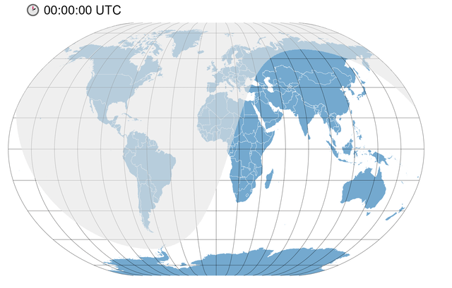

Visualize the day-night cycle on a world map

In April of this year, I made an animation of the 24-hour average temperature of January 2020, also showing the day-night cycle.
The average temperature of 24 hours in January 2020 with the day/night cycle. You can see a lot of geographic patterns. I love this kind of hypnotic temperature gifs. #rstats #rspatial #dataviz #climate pic.twitter.com/NA5haUlnie
— Dr. Dominic Royé (@dr_xeo) April 17, 2021
My biggest problem was finding a way to project correctly the area at night without breaking the geometry. The easiest solution I found was rasterising the night polygon and then reprojecting it. Indeed, a vector approach could be used, but I have preferred to use raster data here.
Packages
We will use the following packages:
| Package | Description |
|---|---|
| tidyverse | Collection of packages (visualization, manipulation): ggplot2, dplyr, purrr, etc. |
| sf | Simple Feature: import, export and manipulate vector data |
| lubridate | Easy manipulation of dates and times |
| hms | Provides a simple class to store durations or time of day values and display them in hh:mm:ss format |
| terra | Import, export and manipulate raster (raster successor package) |
| lwgeom | Access to the liblwgeom library with additional vector functions for sf |
| rnaturalearth | Vector maps of the world ‘Natural Earth’ |
| gifski | Creating animations in gif format |
# install the packages if necessary
if(!require("tidyverse")) install.packages("tidyverse")
if(!require("sf")) install.packages("sf")
if(!require("lubridate")) install.packages("lubridate")
if(!require("hms")) install.packages("hms")
if(!require("terra")) install.packages("terra")
if(!require("lwgeom")) install.packages("lwgeom")
if(!require("rnaturalearth")) install.packages("rnaturalearth")
if(!require("gifski")) install.packages("gifski")
# packages
library(rnaturalearth)
library(tidyverse)
library(lwgeom)
library(sf)
library(terra)
library(lubridate)
library(hms)
library(gifski){rnaturalearth} package it is necessary to install the following additional packages. The {devtools} package must be installed.
devtools::install_github(“ropensci/rnaturalearthdata”)
devtools::install_github(“ropensci/rnaturalearthhires”)
Preparation
External functions
The functions to estimate the separator line between day and night are based on a javascript L.Terminator.js from the {Leaflet} package I found on stackoverflow. You can download the script with the functions here or access it on github.
source("terminator.R") # import the functionsCustom functions
The primary function terminator() based on the javascript of {Leaflet} needs as arguments: the date-time, the minimum and maximum extension, as well as the resolution or the interval of longitude.
t0 <- Sys.time() # date and time of our operating system
t0## [1] "2022-03-27 11:36:26 CEST"coord_nightday <- terminator(t0, -180, 180, 0.2) # estimate the day-night line
# convert it into a spatial object of class sf
line_nightday <- st_linestring(as.matrix(coord_nightday)) %>% st_sfc(crs = 4326)
# plot
plot(line_nightday)
In the next step, we obtain the polygons corresponding to the day and the night that separates the previously estimated line. To do this, we create a rectangle covering the entire planet and use the st_split() function from the {lwgeom} package that divides the rectangle.
# rectangle
wld_bbx <- st_bbox(c(xmin = -180, xmax = 180,
ymin = -90, ymax = 90),
crs = 4326) %>%
st_as_sfc()
# division with the day-night line
poly_nightday <- st_split(wld_bbx, line_nightday) %>%
st_collection_extract(c("POLYGON")) %>%
st_sf()
# plot
plot(poly_nightday)
The question now arises which of the two polygons corresponds to the night and which to the day. That will depend on what day of the year we are, given the changes in the Earth’s position concerning the Sun. Between the first summer equinox and the autumn equinox, it corresponds to the first polygon, when we can also observe the polar day at the north pole, and in the opposite case, it would be the second. The {terra} package only accepts its vector class called SpatVector, so we convert the vector object sf with the vect() function.
# select the second polygon
poly_nightday <- slice(poly_nightday, 2) %>%
mutate(daynight = 1)
# create the raster with a resolution of 0.5º and the extent of the world
r <- rast(vect(wld_bbx), resolution = .5)
# rasterize the night polygon
night_rast <- rasterize(vect(poly_nightday), r)
# result in raster format
plot(night_rast)
In the last step we reproject the raster to Mollweide.
# define the raster projection (WGS84)
crs(night_rast) <- "EPSG:4326"
# reproject
night_rast_prj <- project(night_rast, "ESRI:54009",
mask = TRUE,
method = "near")
# map
plot(night_rast_prj)
Finally we include the individual steps that we have done in a custom function.
rast_determiner <- function(x_min, date, res) {
# create date with time adding the number of minutes
t0 <- as_date(date) + minutes(x_min)
# estimate the coordinates of the line that separates day and night
night_step <- terminator(t0, -180, 180, 0.2) %>% as.matrix()
# pass the points to line
night_line <- st_linestring(night_step) %>% st_sfc(crs = 4326)
# define the rectangle of the planet
wld_bbx <- st_bbox(c(xmin = -180, xmax = 180,
ymin = -90, ymax = 90),
crs = 4326) %>%
st_as_sfc()
# divide the polygon with the day-night line
poly_nightday <- st_split(wld_bbx, night_line) %>%
st_collection_extract(c("POLYGON")) %>%
st_sf()
# select the polygon according to the date
if(date <= make_date(year(date), 3, 20) | date >= make_date(year(date), 9, 23)) {
poly_nightday <- slice(poly_nightday, 2) %>%
mutate(daynight = 1)
} else {
poly_nightday <- slice(poly_nightday, 1) %>%
mutate(daynight = 1)
}
# create the raster with the resolution given in the argument res
r <- rast(vect(wld_bbx), resolution = res)
# rasterize the night polygon
night_rast <- rasterize(vect(poly_nightday), r)
return(night_rast)
}Since we want to obtain the area at night for different day hours, we construct a second function to apply the first one at different day intervals (in minutes).
night_determinator <- function(time_seq, # minutes
date = Sys.Date(), # date (system default)
res = .5) { # raster resolution 0.5º
# apply the first function on a vector of day intervals
night_raster <- map(time_seq,
rast_determiner,
date = date,
res = res)
# convert the raster into an object with as many layers as day intervals
night_raster <- rast(night_raster)
# define the WGS84 projection
crs(night_raster) <- "EPSG:4326"
return(night_raster)
}Create a day-night cycle
First, we create the area of nights for the day of our operating system with intervals of 30 minutes. Then we reproject it to Winkel II.
# apply our function for a 24 hour day in 30 minute intervals
night_rast <- night_determinator(seq(0, 1410, 30), Sys.Date(), res = .5)
# reproject to Winkel II
night_raster_winkel <- project(night_rast,
"ESRI:54019",
mask = TRUE,
method = "near")
# map of the first 5 intervals
plot(night_raster_winkel, maxnl = 5)
Animation of the day-night cycle
Preparation
To create a 24-hour animation showing the movement of the night on the Earth, we must do a few previous steps. First we get the world boundaries with the ne_countries() function and reproject them to the new Winkel II projection. Then we convert the raster data into a data.frame indicating to keep missing values. We can see that each layer of the raster (of each 30-minute interval) is a column in the data.frame. We rename the columns and convert the table into a long format using the pivot_longer() function. What we do is to merge all the columns of the layers into a single one. As the last step, we exclude the missing values with the filter() function.
# country boundaries
wld <- ne_countries(scale = 10, returnclass = "sf") %>%
st_transform("ESRI:54019")
# convert the raster to a data.frame with xyz
df_winkel <- as.data.frame(night_raster_winkel, xy = TRUE, na.rm = FALSE)
# rename all the columns corresponding to the day intervals
names(df_winkel)[3:length(df_winkel)] <- str_c("H", as_hms(seq(0, 1410, 30)*60))
# change to a long format
df_winkel <- pivot_longer(df_winkel, 3:length(df_winkel), names_to = "hour", values_to = "night")
# exclude missing values to reduce table size
df_winkel <- filter(df_winkel, !is.na(night))It only remains to create a graticule and obtain the extent of the world map.
# graticule
grid <- st_graticule() %>% st_transform("ESRI:54019")
# get the extension of the world
bbx <- st_bbox(wld)Now we will build a map at a single interval with ggplot2, adding the vector geometry using the geom_sf() function (the boundaries and the graticule) and the raster data using the geom_raster() function. In the title, we are using a unicode symbol as a clock. We also define the map’s extent in coord_sf() to keet it constant over all maps in the animation. Finally, we make use of {{ }} from the {rlang} package within the filter()function to be able to filter our raster data in table form. So that our function can correctly evaluate the values that we pass in x (the intervals of the day) it is necessary to use this grammar of tidy evaluation due to data masking in tidyverse. Honestly, it is a topic for another post.
# example 5 UTC
x <- "H05:00:00"
# map
ggplot() +
# boundaries
geom_sf(data = wld,
fill = "#74a9cf",
colour = "white",
size = .1) +
# graticule
geom_sf(data = grid, size = .1) +
# filtered raster data
geom_raster(data = filter(df_winkel, hour == {{x}}),
aes(x, y),
fill = "grey90",
alpha = .6) +
# title
labs(title = str_c("\U1F551", str_remove(x, "H"), " UTC")) +
# extension limits
coord_sf(xlim = bbx[c(1, 3)],
ylim = bbx[c(2, 4)]) +
# map style
theme_void() +
theme(plot.title = element_text(hjust = .1, vjust = .9))Animation
We create the animation by applying the walk() function, which in turn will go through the interval vector to filter our data and map each step using ggplot.
walk(str_c("H", as_hms(seq(0, 1410, 30)*60)), function(step){
g <- ggplot() +
geom_sf(data = wld,
fill = "#74a9cf",
colour = "white",
size = .1) +
geom_sf(data = grid,
size = .1) +
geom_raster(data = filter(df_winkel, hour == {{step}}), aes(x, y),
fill = "grey90",
alpha = .6) +
labs(title = str_c("\U1F551", str_remove(x, "H"), " UTC")) +
coord_sf(xlim = bbx[c(1, 3)], ylim = bbx[c(2, 4)]) +
theme_void() +
theme(plot.title = element_text(hjust = .1, vjust = .9))
ggsave(str_c("wld_night_", str_remove_all(step, ":"), ".png"), g,
height = 4.3, width = 8.4, bg = "white", dpi = 300, units = "in")
})The creation of the final gif is done with gifski() passing it the names of the images in the order as they should appear in the animation.
files <- str_c("wld_night_H", str_remove_all(as_hms(seq(0, 1410, 30)*60), ":"), ".png")
gifski(files, "night_day.gif", width = 807, height = 409, loop = TRUE, delay = 0.1)